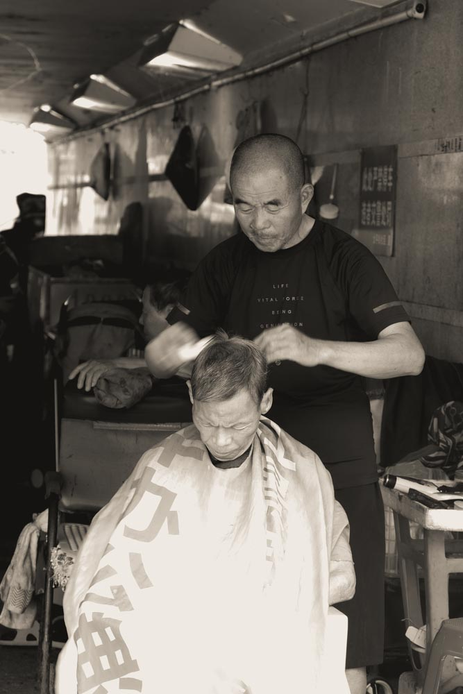
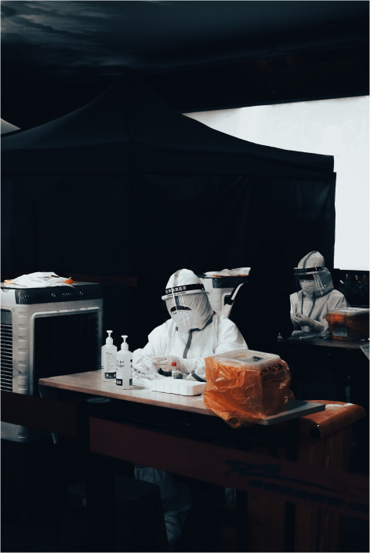
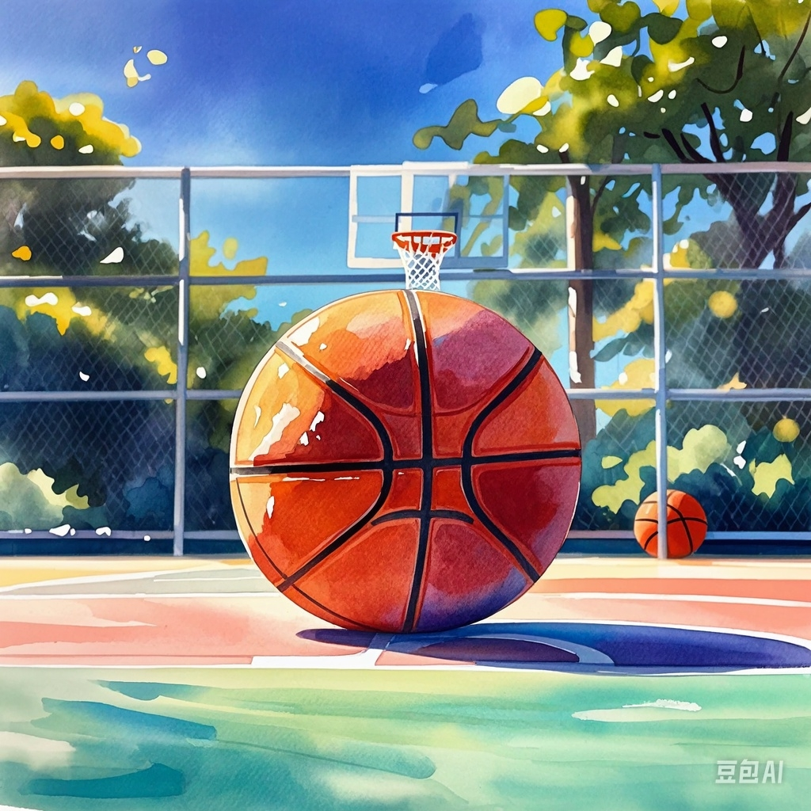
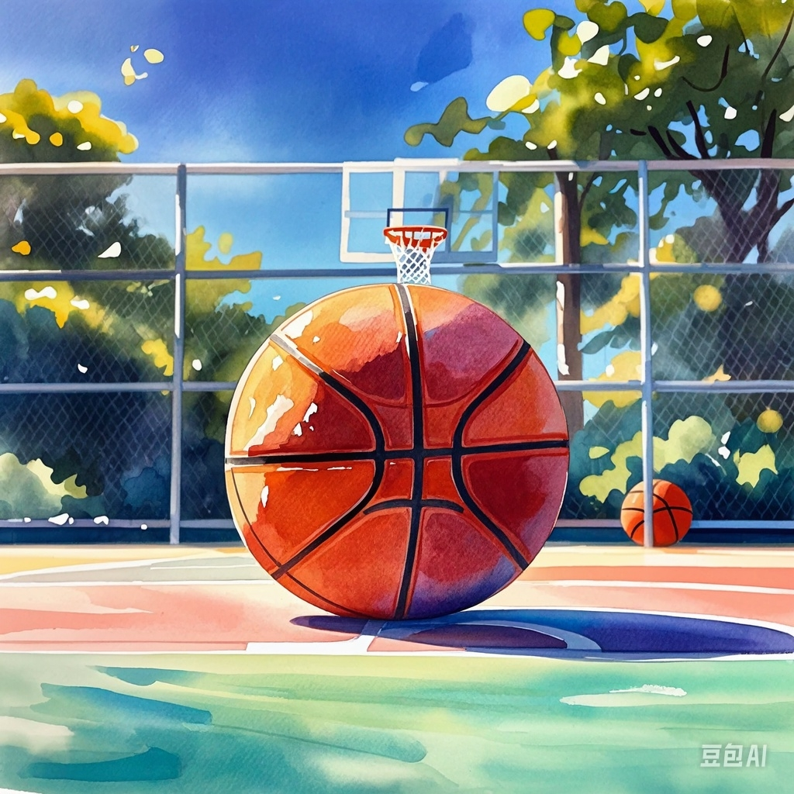

Through each frame, we explore the depth of human experience, from everyday joys to significant social
challenges, documenting the truth with authenticity and urgent clarity
Digital Witnesses:
Capturing Humanity in Documentary Photography
· Project Introduction
In the midst of the global COVID-19 pandemic, the world’s eyes were often drawn to stark, dramatic images,
painting a singular narrative of crisis and despair. Yet, life is complex and this narrow perspective fails
to capture the facts. This documentary photography project, conducted during the peak and subsequent phases
of the pandemic in China, seeks to broaden the lens, offering a more nuanced view of daily life beyond the
crisis.
Through this project, I invite you to see China as it truly is—multifaceted, vibrant, and enduring. Each image tells a story of not just how people faced a global health crisis, but how life, in its most ordinary and extraordinary forms, continued amidst it.
Through this project, I invite you to see China as it truly is—multifaceted, vibrant, and enduring. Each image tells a story of not just how people faced a global health crisis, but how life, in its most ordinary and extraordinary forms, continued amidst it.







 
